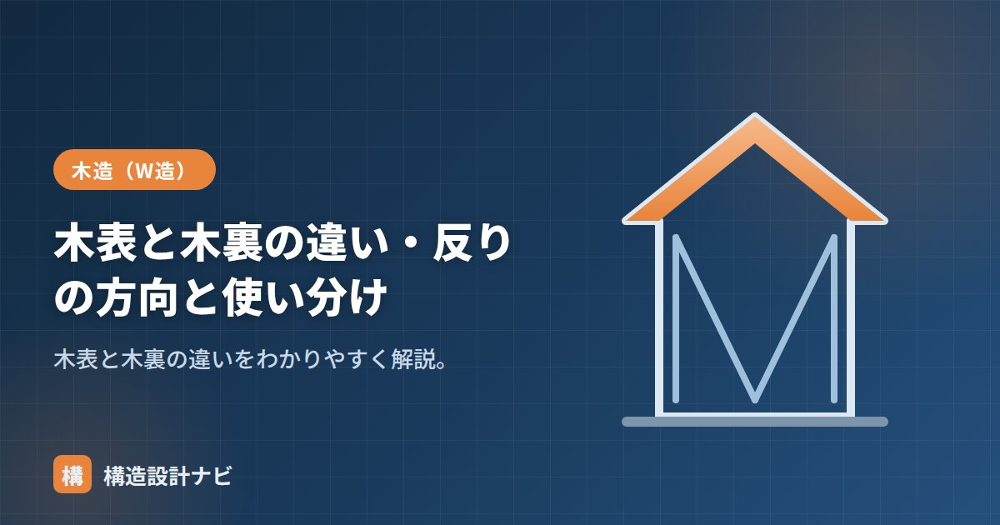

木表と木裏の違い・反りの方向と使い分け

木表（きおもて）と木裏（きうら）とは、丸太から挽いた板材の両面の呼び方で、樹皮に近い側が木表、樹心（中心）に近い側が木裏です。木材は乾燥すると木表側へ凹に反る性質があるため、鴨居・敷居・框などの造作材では、反りの方向を見越して木表・木裏を使い分けます。大工の基本知識であると同時に、木造の納まりを考えるうえで設計者にも欠かせない知識です。
- 木表は樹皮側、木裏は樹心側。木表は木目が美しく化粧面に向く
- 乾燥すると年輪の接線方向の収縮が大きいため、木表側が凹に反る
- 鴨居・敷居は建具側（溝側）に木表を向けるのが使い分けの基本
木表・木裏とは
丸太を板に挽くと、1枚の板の片面は樹皮側、もう片面は樹心側を向きます。この樹皮側の面を木表、樹心側の面を木裏と呼びます。
| 木表 | 木裏 | |
|---|---|---|
| 位置 | 樹皮に近い側 | 樹心（中心）に近い側 |
| 見た目 | 木目が美しい・なめらか | ささくれやすい |
| 用途 | 化粧面・見え掛かり | 下地側・隠れる面 |
木表側は樹木の外周部（辺材）に近く、木目が細かく仕上がりがきれいなため、化粧面として使われます。一方の木裏は、かんな掛けの際に逆目が立ちやすく、ささくれが出やすい面です。なお、この区別がはっきり現れるのは年輪が弧を描く板目材で、年輪に直角に挽いた柾目（まさめ）材では木表・木裏の差はほとんどありません。
反りの方向とその理由
木は乾燥すると、年輪の接線方向の収縮が大きいため、木表側が縮んで凹（へこむ）ように反ります。つまり木表面が凹、木裏面が凸になります。この性質を見越して材を使い分けます。
木材の乾燥収縮は方向によって大きさが異なり、年輪の接線方向がもっとも大きく、半径方向はその半分程度です。板目板では木表側ほど年輪の接線方向に近い繊維配置になるため、木表側の収縮が大きくなり、板全体が木表側へ反り返ります。「反りは年輪のカーブがまっすぐに伸びる向きに起こる」と覚えると間違えません。含水率と収縮の関係は「気乾状態」で詳しく解説しています。
木表・木裏の見分け方
木口（こぐち＝材の切断面）を見ると、年輪が弧を描いています。年輪の弧が張り出している側（山の凸側）が木表、弧の中心（樹心）に近い側が木裏です。木口が見えない場合は、板面の木目や節の様子、手触り（木裏はささくれやすい）から判断します。
鴨居・敷居・框の使い分けルール
- 框（かまち）・敷居の踏む面・化粧面：見た目がよく傷つきにくい木表を見え側に使う。
- 鴨居・敷居：建具が反りで動かなくならないよう、溝のある建具側を木表に向けるのが基本（木表が凹に反るため、溝側が中央でふくらまない）。
- 水がかり・濡れる面は、反って水が溜まらない向きを選ぶ。
鴨居は溝が下向き、敷居は溝が上向きですが、いずれも「建具の通る溝側＝木表」とすれば、乾燥で反ったときに溝の中央が建具側へ張り出さず、建具の動きが渋くなりにくいという理屈です。※細かなルールは流派・現場で異なります。基本は「反りの向き＋化粧面」で判断します。
木表・木裏を逆に使うと、乾燥後に建具が動かなくなったり、床板のふちが持ち上がってつまずきの原因になったりします。プレカット・集成材が主流の現在でも、無垢の造作材を使う場面では必ず確認しましょう。
よくある質問
Q1. 柾目板にも木表・木裏はありますか？
柾目材は年輪に対して直角に挽くため、両面の性質の差が小さく、木表・木裏の区別はほとんど問題になりません。反りも板目材より格段に小さいのが特徴です。
Q2. 梁や柱など構造材でも木表・木裏を気にしますか？
構造材では板の木表・木裏よりも、「背（丸太の外側・凸に反る側）と腹」や「元（根元側）と末」の使い分けが重視されます。たとえば梁は反り（むくり）が上向きになるように架けるのが基本です。
木造の詳細図をチェックしていると、鴨居や敷居の木表・木裏の指定が図面に明記されず大工任せになっている現場に出会うことがあります。プレカットが主流でも造作材は無垢が残るため、監理の際は建具側が木表になっているかを木口で実際に確認するようにしています。
まとめ
- 木表は樹皮側、木裏は樹心側。木表は木目が美しく化粧面に向く。
- 乾燥すると接線方向の収縮が大きいため、木表側が凹に反る。
- 木口の年輪の弧が張り出す側が木表。板目材で区別が明確になる。
- 化粧面は木表、鴨居・敷居は建具側（溝側）を木表に向けるのが基本。